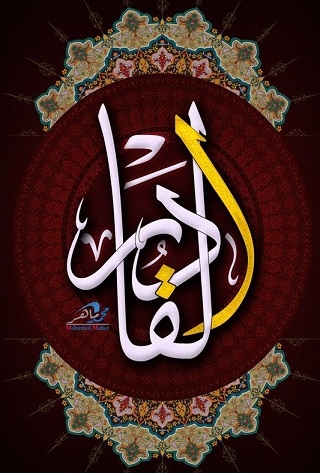
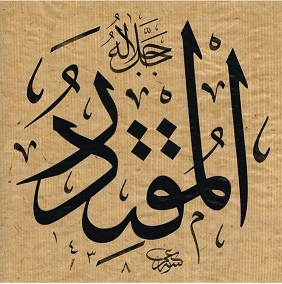

Kudret ismi yılın en önemli gecesini tanımlıyor:
97:3
leyletul-kadri ḣayrun min elfi şehr
Kadir gecesi bin aydan hayırlıdır

6:65
kul huvel-kâdiru ‘alâ en yeb‘aśe ‘aleykum ‘ażâben
De ki: “O'nun size üstünüzden (gökten) veya ayaklarınızın altından (yerden) bir azap göndermeye ya da birbirinize düşürüp birbirinizin öfkesini tattırmaya da gücü yeter.”

54:55
fî maq'adi sidqin 'inde melîkin muqtedir
Doğruluk tahtında, Muktedir bir Melîk'in yüce katında
Kudret kavramı Kur’ân-ı Kerîm’de 103 yerde Allah’a nisbet ... kullanılmıştır. Kādir ismi yedi âyette tekil, beş âyette tâzim ifade etmek üzere çoğul sîgasıyla Allah’a izâfe edilmiştir. Bunlardan başka doksan dokuz isim listesinde bulunmayan Kadîr ismi kırk beş âyette, Muktedir ismi de dört âyette zât-ı ilâhiyyeyi nitelemektedir.
Kaynak: İslam Ansiklopedisi
99 isim listesinde olmayan Kadîr sıfatı tam 33 âyette şu kalıpta kullanılmış:

67:1
vehuve ‘alâ kulli şey-in kadîr
O’nun her şeye gücü yeter